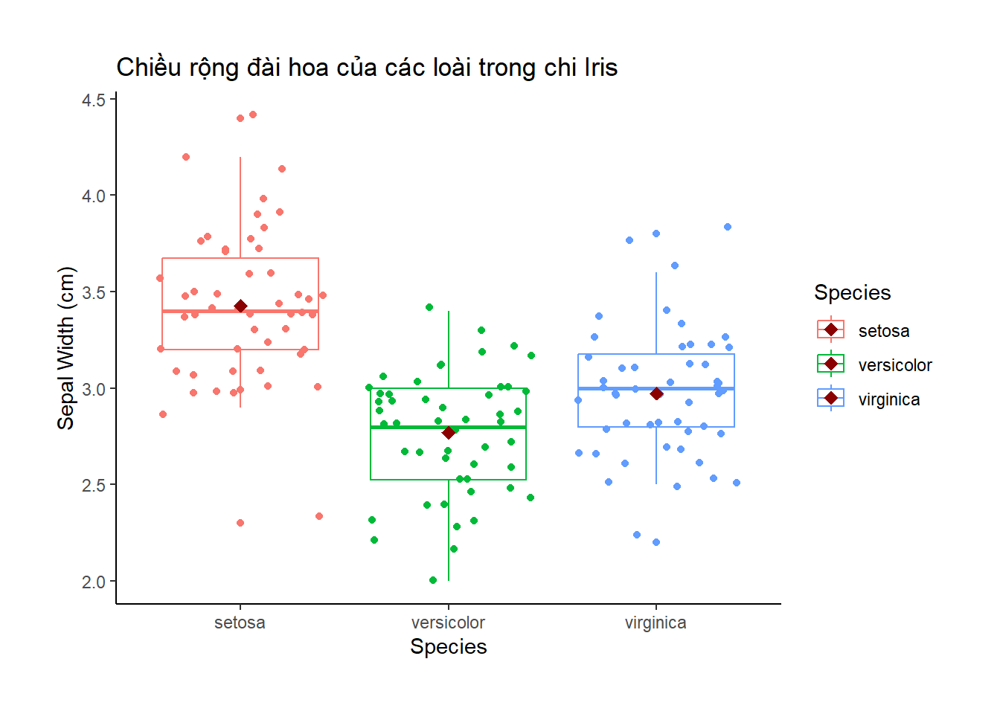
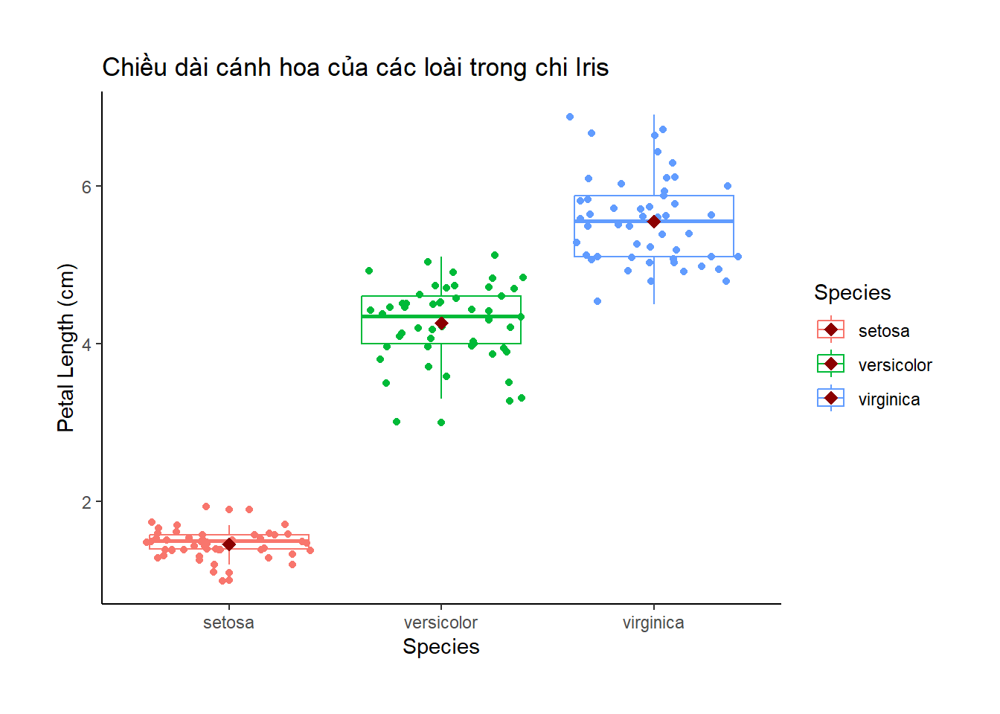
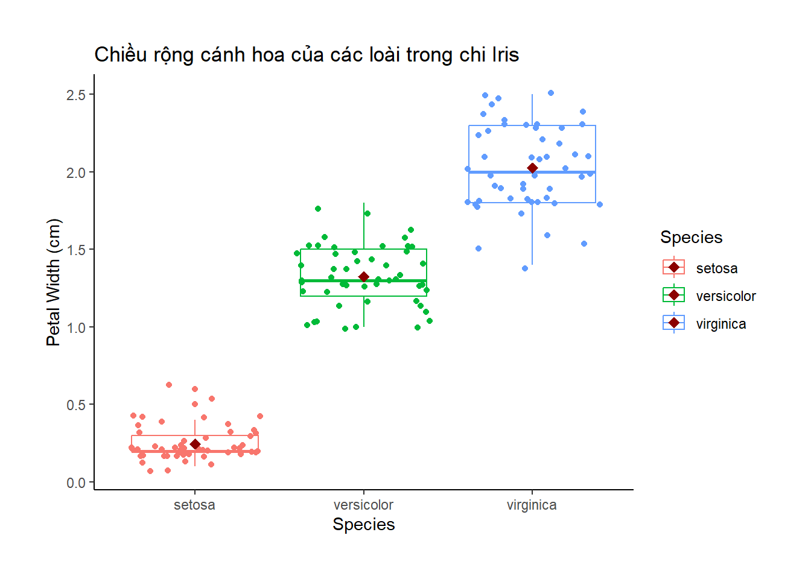

This famous (Fisher’s or Anderson’s) iris data set gives the measurements in centimeters of the variables sepal length and width and petal length and width, respectively, for 50 flowers from each of 3 species of iris. The species are Iris setosa, versicolor, and virginica.
Khi làm việc với R, ta thường hay gặp các dataset minh họa cách xử lý thống kê. Một trong số đó là dataset iris là kết quả đo đạc thực nghiệm (đơn vị cm) về chiều dài và chiều rộng của đài hoa Sepal.Length và Sepal.Width, cũng như chiều dài và chiều rộng của cánh hoa Petal.Length và Petal.Width của 3 loài hoa khác nhau thuộc chi Diên Vĩ lần lượt là Iris setosa, Iris versicolor, and Iris virginica.
Dataset này được công bố ở bài báo Anderson, Edgar (1935). The irises of the Gaspe Peninsula, Bulletin of the American Iris Society, 59, 2–5.
Bài hướng dẫn sau sẽ giúp bạn tiếp cận quy trình phân tích thống kê một cách có hệ thống để làm chủ dần các lệnh phân tích thống kê trong R cũng như trả lời được các câu hỏi căn bản về một bộ dataset trước khi thực sự đi sâu vào các model thống kê cao hơn từ chính bộ dataset đó.
summary(iris) # tóm tắt sơ bộ các biến trong dataset
Sepal.Length Sepal.Width Petal.Length Petal.Width Species
Min. :4.300 Min. :2.000 Min. :1.000 Min. :0.100 setosa :50
1st Qu.:5.100 1st Qu.:2.800 1st Qu.:1.600 1st Qu.:0.300 versicolor:50
Median :5.800 Median :3.000 Median :4.350 Median :1.300 virginica :50
Mean :5.843 Mean :3.057 Mean :3.758 Mean :1.199
3rd Qu.:6.400 3rd Qu.:3.300 3rd Qu.:5.100 3rd Qu.:1.800
Max. :7.900 Max. :4.400 Max. :6.900 Max. :2.500
sapply(iris, class) # kiểm tra class trong từng cột dataset
Sepal.Length Sepal.Width Petal.Length Petal.Width Species
"numeric" "numeric" "numeric" "numeric" "factor"
15.4 Bước 3: Thống kê mô tả
Đồ thị boxplot
library(ggplot2)
Warning: package 'ggplot2' was built under R version 4.3.3
ggplot(data = iris, aes(x = Species, y = Sepal.Length, color = Species)) +geom_boxplot() +geom_jitter() +scale_x_discrete(name ="Species") +scale_y_continuous(name ="Sepal Length (cm)") +labs(title ="Chiều dài đài hoa của các loài trong chi Iris") +stat_summary(fun = mean, colour ="darkred", geom ="point", shape =18, size =3, show.legend =TRUE) +theme_classic() +theme(plot.margin =margin(t =1, r =1, b =1, l =1, "cm"))
library(ggplot2)ggplot(data = iris, aes(x = Species, y = Sepal.Width, color = Species)) +geom_boxplot() +geom_jitter() +scale_x_discrete(name ="Species") +scale_y_continuous(name ="Sepal Width (cm)") +labs(title ="Chiều rộng đài hoa của các loài trong chi Iris") +stat_summary(fun = mean, colour ="darkred", geom ="point", shape =18, size =3, show.legend =TRUE) +theme_classic() +theme(plot.margin =margin(t =1, r =1, b =1, l =1, "cm"))

library(ggplot2)ggplot(data = iris, aes(x = Species, y = Petal.Length, color = Species)) +geom_boxplot() +geom_jitter() +scale_x_discrete(name ="Species") +scale_y_continuous(name ="Petal Length (cm)") +labs(title ="Chiều dài cánh hoa của các loài trong chi Iris") +stat_summary(fun = mean, colour ="darkred", geom ="point", shape =18, size =3, show.legend =TRUE) +theme_classic() +theme(plot.margin =margin(t =1, r =1, b =1, l =1, "cm"))

library(ggplot2)ggplot(data = iris, aes(x = Species, y = Petal.Width, color = Species)) +geom_boxplot() +geom_jitter() +scale_x_discrete(name ="Species") +scale_y_continuous(name ="Petal Width (cm)") +labs(title ="Chiều rộng cánh hoa của các loài trong chi Iris") +stat_summary(fun = mean, colour ="darkred", geom ="point", shape =18, size =3, show.legend =TRUE) +theme_classic() +theme(plot.margin =margin(t =1, r =1, b =1, l =1, "cm"))

Đồ thị histogram
library(ggplot2)ggplot(data = iris, aes(x = Sepal.Length, color = Species, fill = Species)) +geom_density(alpha =0.5) +scale_x_continuous(limits =c(3, 9), name ="Sepal Length (cm)") +labs(title ="Phân phối về chiều dài đài hoa giữa các loài trong chi Iris") +theme_classic() +theme(plot.margin =margin(t =1, r =1, b =1, l =1, "cm"))
library(ggplot2)ggplot(data = iris, aes(x = Sepal.Width, color = Species, fill = Species)) +geom_density(alpha =0.5) +scale_x_continuous(limits =c(0, 6), name ="Sepal Width (cm)") +labs(title ="Phân phối về chiều rộng đài hoa giữa các loài trong chi Iris") +theme_classic() +theme(plot.margin =margin(t =1, r =1, b =1, l =1, "cm"))
library(ggplot2)ggplot(data = iris, aes(x = Petal.Length, color = Species, fill = Species)) +geom_density(alpha =0.5) +scale_x_continuous(limits =c(0, 8), name ="Petal Length (cm)") +labs(title ="Phân phối về chiều dài cánh hoa giữa các loài trong chi Iris") +theme_classic() +theme(plot.margin =margin(t =1, r =1, b =1, l =1, "cm"))
library(ggplot2)ggplot(data = iris, aes(x = Petal.Width, color = Species, fill = Species)) +geom_density(alpha =0.5) +scale_x_continuous(limits =c(0, 3), name ="Petal Width (cm)") +labs(title ="Phân phối về chiều rộng cánh hoa giữa các loài trong chi Iris") +theme_classic() +theme(plot.margin =margin(t =1, r =1, b =1, l =1, "cm"))